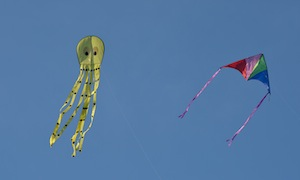

Happiness Club Events
As the old saying goes, "An Apple a day keeps the doctor away!", and so do Applegrams by spreading smiles to faculty and staff members of the Northwestern community! An Applegram is an appreciation note that anyone can write to a faculty or staff member at Northwestern University. Happiness Club set up an Applegram stand on campus and sold Applegrams for $1.00 as a fundraiser for the club's activities, and in return delivered fresh apples to Applegram recipients along with an anonymous appreciation note!Love free candy? Love spontaneous compliments? Combine the two and you get a classic Happiness club event - Candy and Compliments! Happiness Club members spend a night prepping the event by writing hundreds of compliments on post-it notes and sticking them to pieces of candy. The following day Happiness Club hands out these free candy and compliments to students walking to and from class. The perfect pick-me-up before a big test!
With the help of the Be the Change Grant sponsored by the Center for Student Involvement, Happiness Club was able to purchase hundreds of pieces of chalk! With the help of our club members, we successfully covered a half-miles stretch of sidewalk along the Northwestern Campus! We chalked fun games like hopscotch and tic-tac-toe, popular song lyrics, inspirational quotes, and pictures of animals (lots of bunnies)! Happiness Club spent nearly 4 hours chalking the sidewalk at night to surprise the Northwestern campus in the morning, making that walk to class an enjoyable and laughable experience! Check out the coverage of our chalking event by The Daily Northwestern and North by Northwestern:
Happiness Club cheerily chalks Sheridan - The Daily Northwestern
Happiness Club chalks Sheridan sidewalks - North by Northwestern
Last year during reading week of Winter Quarter (one of the least happiest weeks of the year) we created Compliment Day. We told the whole student body to send anonymous compliments to their friends using NUPost-It.com and set up computers in the library to make it easy and convenient. Over 1,000 compliments were sent and we crashed NU Post-It’s server. We feel bad about that but it was a small price to pay for all the Happiness going around.
As Happiness Club's first event on December 9, 2007, Free Hugs and Hot Chocolate has become a staple of the club and a great tradition at Northwestern! Every quarter on the Sunday before finals week, Happiness Club members gather outside of the main entrance to the library and hand out free hugs and hot chocolate (or lemonade during the spring) to students entering and exiting the library. Beginning at 9:00pm with the primal scream, Happiness Club has been cheering up students with this simple event since its founding in 2007!
To celebrate the end of the school year and the club's recognition as a new student group, Happiness Club decided to end Spring Quarter 2010 with a week of awesome events and activities - Happiness Week! Check out the story Northwestern News wrote about us: Don't Worry, Be Happy - Northwestern News
Magical Bubbles Monday
Bubbles and Bubblegum was so successful that we decided to do it again!
Temporary Tattoosday!
Happiness Club purchased hundreds of smiley face temporary tattoos, set up a table on campus, and helped students cover themselves in smiley faces.
Wacky Facepaint Wednesday!
Happiness Club set up a facepainting booth at the OASIC/NCDC Spring Carnival, an annual event that bring kids from the Evanston area onto campus for an afternoon of fun and games.
Nametag Day!
Being part of a community of 8,000 undergraduate students and thousands of other community members, it's impossible to know everyone, but we had an idea. Thanks to the Be the Change Grant sponsored by the Center for Student Involvement, Happiness Club was able to purchase 8,000 nametags! On Thursday, we handed out thousands of nametags to students all over campus, encouraging strangers and familiar nameless faces to interact in a friendly and fun way.
Flashback Friday!
Happiness Club celebrated the end of Happiness Week with a joint event with NOM - Northwestern's food club. We turned Deering Field and the sidewalk next to it into a childhood playground full of hopscotch, jump rope, parachutes, four square, chalk, Play-Doh, coloring, and kid snacks like Goldfish, Caprisun, animal crackers, and Dino shaped PB&J sandwiches.
What action is simpler and easier at generating a smile than a high-five? Happiness Club spent a Friday afternoon holding open doors to academic buildings on campus and high-fiving students as they left class and headed home for the weekend!

Happiness Club paired up with Northwestern Community Development Corps (NCDC) to put together a Kite Flying event. Together we purchased 80 kites of all shapes and sizes and hosted an afternoon of kite flying and s'more eating on Northwestern's beautiful lakefill! Hundreds of students came out to the lakeside to fly kites (or learn how), eat smores, and hang out!
Donna Nelson, a certified Laughter Yoga leader came to Northwestern to teach Happiness Club about laughter yoga! What is laughter yoga? It's basically laughing and breathing; you start off forcing the laughter, and then it just becomes natural and uncontrollable!
After success with Candy and Compliments Happiness Club decided to spice up the event and put a Valentine's Day spin to the event. Instead of handing out candy with compliments on a random day, Happiness Club scheduled their event for Valentines Day and changed the name to Lollipops of Love - handing out lollipops with compliments and motivational notes attached!
Happiness Club built a sandbox on Northwestern's campus for a day! It was filled with sand toys and was built in the middle of the night to surprise students as they walked to class! While few students actually played in the sandbox, many smiled and laughed at the sight of a sandbox in the middle of campus!
Happiness Club gets groove on in front of Tech sans sound - The Daily Northwestern
Happiness Club hosts Silent Dance Party - North by Northwestern
To kickoff each year, Happiness Club distributes one thousand smiley face stickers to students walking around on campus. It is a great way to get our club's name out to the community and also spread the smiles to everyone at Northwestern!
Happiness Club hosted a Thanksgiving Thank You card making booth on campus before the holiday break. The booth provided construction paper, markers, glue, feathers, googly eyes, and lots of stickers to be used in make cards for anyone - teachers, family, friends, whoever!